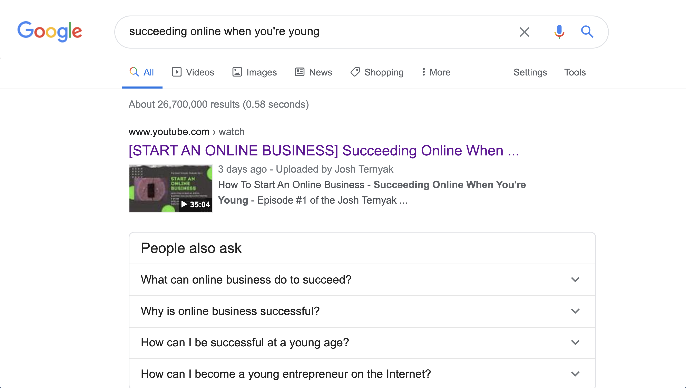

Having a valuable skillset is a big step towards financial independence.
This episode is all about succeeding online when you're young. There's lots of questions asking how to be successful online. But how do you come up with a valuable product?
Figure out what problems people have.
First, you have to figure out what problems people have. If many people have a problem, you need to figure out a profitable solution to that problem. For example, you can create a company where you're making $1M a year, but you're not actually making any money. In that situation, you need to change how much you're spending to acquire the customer.
SEO brings your website long-term traffic.
On top of that, you need SEO because of the long-term gains and traffic it will bring to your website. The first major step to being successful online is to have a profitable product, figure out what problems people have in your niche, and make a product that solves their problem.
You will need a website that showcases your product and is professionally built. Hiring a web developer is a great option, but if you are one yourself, then taking the time to build a stunning website is worth the time and effort.

Next, learn web development.
The next step is to learn web development. A common trend that many people don't notice, is that online, the people who make the most money know how to build websites for other people, and for themselves. However, what if you build a website, but you're getting little or not even any traffic. This is where promoting your website comes in.
Learn how to promote your website.
There are several ways of doing this, and to get you started, read and watch Neil Patel's blog and Backlinko by Brian Dean. Here's the gist of what they say. Step 1: Figure out what niche you're in. A great tool to use is Ahrefs. The guides you or your writer will write will have to be very in-depth and long.
This extra effort and work will give you more of a chance to rank in search engines for your targeted keyword(s). Include your keyword a handful of times throughout your post, and have related keywords and topics throughout the entire post. To make the structure of your articles better and easier to read, write short sentences and split up paragraphs into sections.

Make it clear why your product is valuable.
Many people think that the next step is to sell your product. The main thing you need to do is show and explain why your product is very valuable to your potential customers. Make this very clear in the main headline. For example, if you're selling a website theme, you would say, "Build websites to grow your business in minutes".
You should tell your potential customers the main benefit of buying your product vs. telling them all of the features. Then, target your audience correctly. If you're selling a website theme, you wouldn't want to write about coconuts in your blog. On the other hand, you would want to write in-depth guides on how to build websites with HTML and CSS.
For example, my video currently ranks #1 for the keyword "succeeding online when you're young". However, I am currently working on ranking that video for other keywords as well that are searched more often.
Learn valuable skills when you're young.
Next, teach yourself valuable skills when you're young, so you don't have to spend money hiring people when you're older. So, you might be thinking, why should I listen to you? Well, I started learning programming when I was 11 and am now a front-end web developer. Now, I have a serious mindset about coding, because of the benefits it can give me in the future. This is the mindset you should have in business. Take it seriously and understand your daily, weekly, monthly, and yearly goals.
When you're building a product online, focus on SEO because it drives long-term traffic to your website. When you have consistent and long-term traffic, it's much better than getting a post viral and not getting any conversions. But, what if you're stuck in this trap where nobody finds your product, and you don't get consistent traffic.
You are targeting the wrong keywords.
You might be targeting the wrong keywords and you might be writing about the wrong topics. So, you must ask questions online in your niche asking potential customers what problems they have. Then, you would promote your product in the forums and write about how it would make their lives easier.
Another problem is, building a profitable online product yourself takes a long time. You might really want to build a product that's profitable, but you might not even know what to build. For example, building an HTML website theme in 2020 wouldn't actually be very useful because there are so many already made. Making a product better than your competitors is usually very challenging. The solution? Ask lots of questions online to understand what your potential customers want and need.
Write valuable content, for free.
First, write free content that will significantly benefit your potential customers. Then, once you have a blog setup and ready to go, you should build an email list. The first thing a potential customer sees is the headline. This is why the main headline of your website should have the main reason why they should buy your product. It may seem very confusing, but think about it on a basic level. If you want to be successful, you should work and strive towards financial independence.
However, being successful doesn't just mean you have money. So, you'll have to build a skill set that's very profitable. Software development is a very profitable skill to learn. If you're trying to create a software company in 2020, it's very difficult. A common problem could be that you "don't have enough time".
You waste a lot of time.
Well, you're probably wasting it. According to a recent study, "the overall time Americans spend on various media is expected to grow to nearly 11 hours per day this year, after accounting for declines in time spent with other media like TV and newspapers that are increasingly moving online, according to Zenith."
Going through high school hating it and knowing that what I'm learning isn't valuable and won't make me any money, I was very stressed out. That's the main reason why I am so motivated to get rich by building online businesses that add lots of value to people's lives.
One of the biggest mistakes you can make is to work hard to impress people. This is because you're not being real with yourself. Is your main motivation to impress people? In reality, people who try to impress aren't impressive; people who are impressive impress. The only thing you should be doing is to get better everyday and have fun while you're doing it. It's the process of consistently learning a skill set that's the most important part.
Use your first project as a learning experience.
The thing is, my first project was valuable not because of what I got paid, but because of how much I learned throughout the experience. The best advice I can give to anyone who’s a beginner web developer is to use your first project as a learning experience, not a “getting paid” experience.
Your end goal shouldn't be to get rich, it should be to add lots of value to people and their lives. If you can teach yourself valuable skills, people will pay you for that value you're giving them. However, exchanging time for your money can also be an issue if you're trying to make passive income.
The next step to becoming rich when you're young is to not waste time and get rid of distractions (social media, silly videos, television, and pointless reading). You have to create products and learn skills.
If you don't learn profitable skills, you'll probably end up working at a job you hate.
I used to work at a movie theater, and I saw older men and women working there. At the time, I didn't realize how crazy that was. The main reason why they were in that job is because they don't have valuable skills. What's the actual purpose of someone working hard to get rich?
Why would someone spend thousands of hours learning a skill if they're just going to buy a fancy car and waste their money and live in toxic materialism and toxic lifestyles? This is a huge problem in the "celebrity" lifestyle.
The celebrity lifestyle isn't fulfilling.
Yes, celebrities might be making millions of dollars left and right, but most of them are not very fulfilled in their life. This is mainly because of the toxic culture of social media and comparing yourself to others.
In fact, millions of people are celebrities whether they realize it or not. Living your life based on how many followers you have is not a fulfilling lifestyle. In fact, are you really "living" at that point?
Truly living and experiencing life does not call for comparing yourself to others with less or more social media "followers", whatever that means.
In general, it's critical to stay sane and humble. This is especially true when you're building an online business, because if you don't, your business, the internet, and your ego will take over your life.
Many people get trapped in the cycle of working hard to get money to impress people. You must have a supportive community. During this pandemic, visiting your friends isn't an option. However, having supportive and honest friends will motivate you to continue to keep working hard because you'll actually have a reason to work hard and make money.

Building a profitable online business is easy and hard.
In my opinion, building a profitable online business is easy and hard. Building a great product is very difficult. However, there are countless resources online that can teach you how to build it. If people are in a controlled environment with access to the internet, books, and time (most teenagers do), they should be financially independent in 5 years. Time + resources + internet = you must be rich in a handful of years.
A great and profitable skill set to have is content marketing, SEO, and web development. Knowing HTML, CSS, JS, React, Vue, Node, Python, Python Flask, Django, Ruby on Rails means you can offer people your services that you will get paid lots of money for. If you enjoy math and solving complex problems, teaching yourself computer science online is a great choice.
Amazon is a very valuable product because it helps other people find products. This is why everybody who's young and wants to succeed online has to learn software development. Before you learn web development, identify what you actually want to achieve in the long run. You should be able to know how to build web apps that solve people's problems.
We can agree that many people want to be rich. Since many people, especially milenials, have a soft mindset, if you're a hard worker that knows what you want and how to get there, you'll probably succeed. Many people are trained to be soft because of their parents spoiling them and because of the way society treats them. Removing addiction to buying "things" because it gets rid of dopamine in your life and allows you to focus on what's important.
Access to the internet means you have access to becoming wealthy.
To wrap things up, if you have access to the internet, and live in a civil environment, you shouldn't have any excuses of why you're not rich in the next 5 years. You should spend time everyday learning valuable skills that you will get paid lots of money for in the near future.
You must have a valuable skill set to achieve financial independence. Learning web development, software development, SEO, and/or content marketing. Writing is also a profitable skill. However, it's best that you learn programming and how to write quality content that attracts potential customers.
Learning SEO will help you get long-term traffic to your website that you built with your coding skills. You must not waste time and create opportunities for you and your business. To be rich, you must add value to people's lives.
In the next episode, we will talk about is why having a support system is important and why living in a community and not living in a fancy mansion by yourself will help you stay sane. My main goal with this podcast is to help people who want to succeed online do so in a way that keeps them sane and without lots of stress and panic.
If you're looking for daily tips, stories, and resources to help you grow your business and enjoy the process along the way, join the newsletter, it's free.